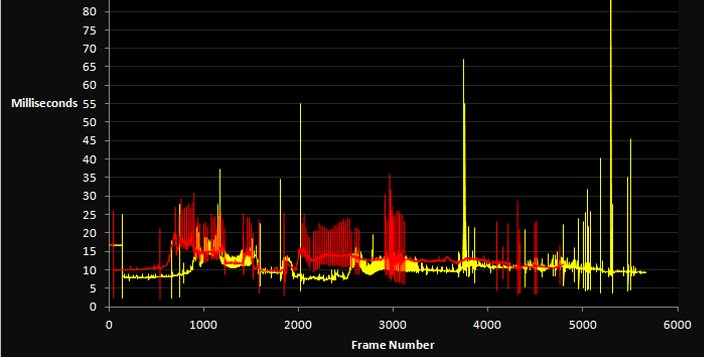
Profiling is often underrated as a continuous process, regarded as something like a final phase before release, akin to polishing or bug hunting — and broadly it does resemble bug hunting, but it's not just finding bottlenecks in the code and fixing them here and now; it's often a separate development philosophy that contains several schools with their own principles that differ quite a bit. And without a deep understanding of "how to profile properly," it's impossible to make a game that will run acceptably on a "potato."
I'll start with a fundamental question: what is a game from a software-engineering standpoint? Broadly, a game is a soft real-time system, which means that all the processes happening in it — from game events like the player pressing buttons or enemies appearing on screen, through the game logic that defines the rules of object interaction and the state of the game world, physics, collisions, and ending with rendering — must happen within a strictly defined time, and this constraint is absolute and not up for discussion, otherwise we get a "sluggish" gameplay.
This sets games very much apart from most other types of software, where a small delay of a few milliseconds is not as noticeable or not critical at all for the user experience. You opened this article and your browser loaded this page a second slower than it could have, because I, as usual, inserted a big cover image, but you as a user most likely didn't even notice. Or the Habr editor in which I'm writing this article right now, which saves the document a second slower than it could — that absolutely doesn't affect the work and you never even thought about it.
But if a game drops even a single frame and instead of 16.6 milliseconds spends 30 or more, the player notices the lag in the animation, and it ruins the impression of the game. Accordingly, if we add something to the game code, change something in the algorithms or in the content, we must track it strictly so as not to introduce performance problems that destroy the gameplay experience.
The evolution of expectations
In general, when it comes to which top-level metric you can use to assess a game's performance, it's of course frames per second (the dear-to-the-heart 60 fps), which show how many times per second the game updates the image on the screen. As for some of the simplest games, where we don't need a particularly fast reaction — for example turn-based strategies or puzzles — twenty or thirty frames per second may be enough overall, and players won't really notice problems, because there's no need to react to rapidly changing events on screen, but even in a super-slow RTS negative reviews will fly in for freezes.

As for more complex games (in terms of the fight for fps), especially action games, shooters or racing games, we need at least 45, and better sixty FPS, because at a lower frame rate the very movement on screen starts to look choppy and jerky, and it becomes hard to precisely control your character or aim. As for esports, where milliseconds decide the outcome of a match and professional players train their reaction beyond ordinary human capabilities, there players already want 120 FPS, and better 144 or even 240 FPS, and accordingly you have to track that changes don't lead to performance drops that give some players an advantage over others simply because of the quality of their hardware.

Historically the FPS expectations kept rising along with the development of technology and players getting used to higher quality. In the 1990s, games like Doom and Quake ran at 15-25 FPS on typical hardware of the time, and that was considered completely acceptable; moreover, many console games of that era ran at 20 FPS or even lower, and nobody particularly complained, because there simply was no alternative — but with the arrival of monitors with a 60+ Hz refresh rate and the PlayStation 2 and Xbox consoles, 60 FPS became the standard for dynamic games, and with the popularization of esports and the appearance of 144 Hz and higher monitors the bar rose even higher.
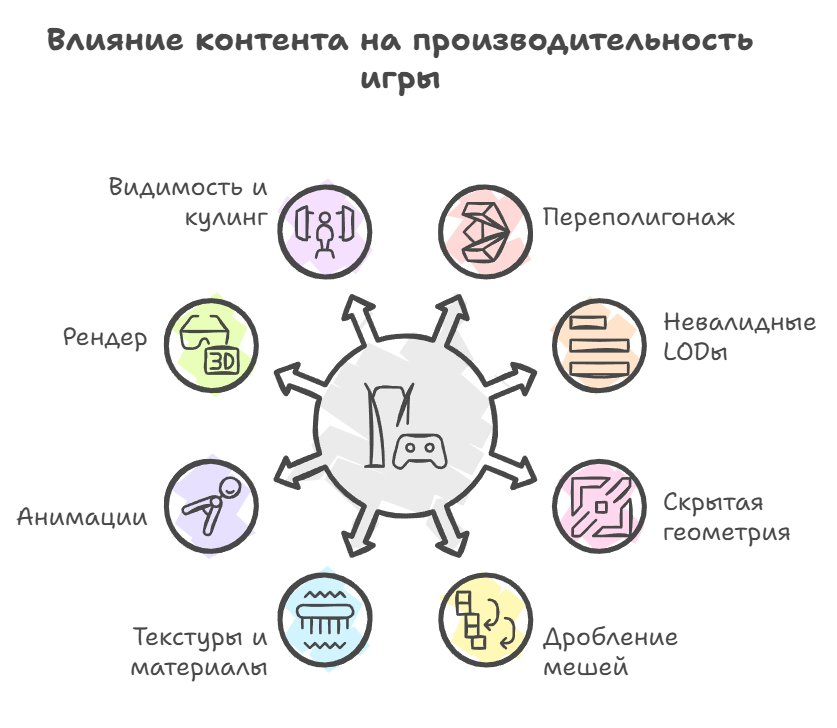
In general, besides programmers who can directly make changes to the code and break something — for example by choosing a bad algorithm or a memory allocation somewhere in a hot-path function — performance can be heavily affected by artists too, and on top of that by everyone who produces content for the game (models, textures, animations and visual effects). They too can break a lot of things and dramatically affect perf. For example, by making a model with a million polygons where ten thousand would have been enough (the classic over-polygon story), or by stuffing a heavy texture onto one tiny polygon, or by hiding invisible geometry inside visible geometry — and accordingly this has to be watched constantly and systematically.
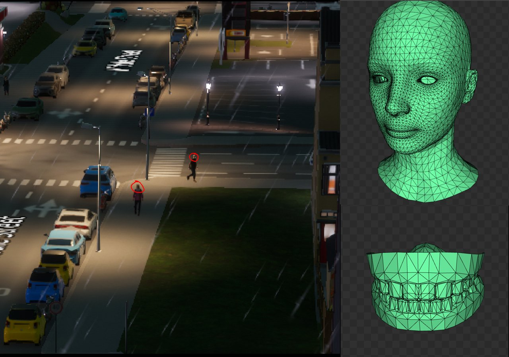
Artists and designers have far more ways to mess things up.
Geometry
Over-polygon count — no LODs; too high density where an object takes up 20 pixels of the screen.
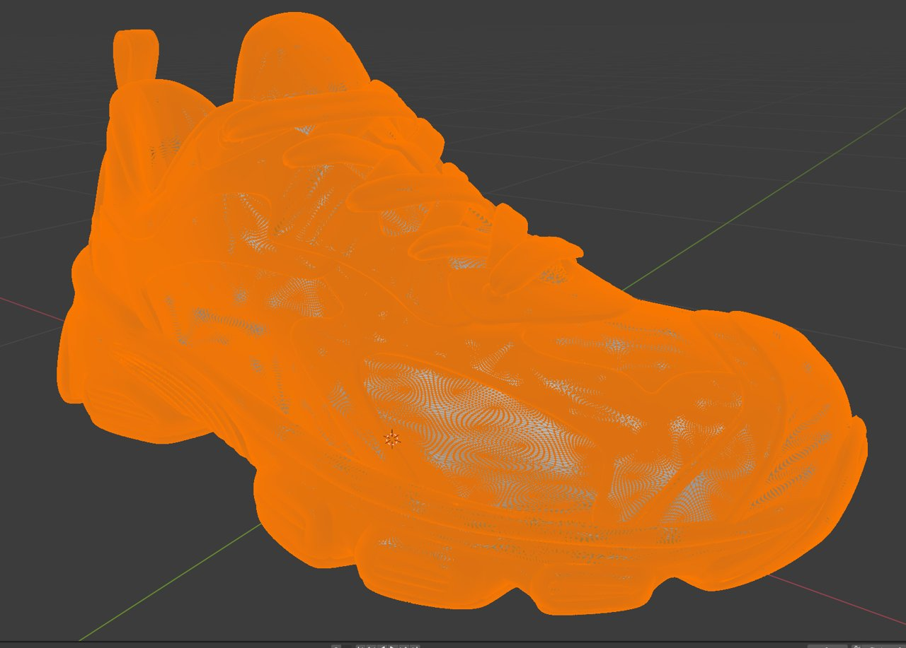
Invalid LODs — switches too late; too few LOD levels.
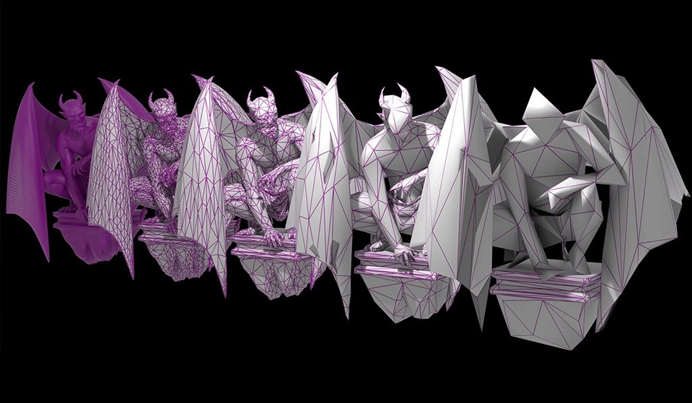
Hidden geometry — nested meshes; geometry underground / inside buildings; forgotten proxy objects.
Mesh fragmentation — one visual object, but dozens of drawcalls.
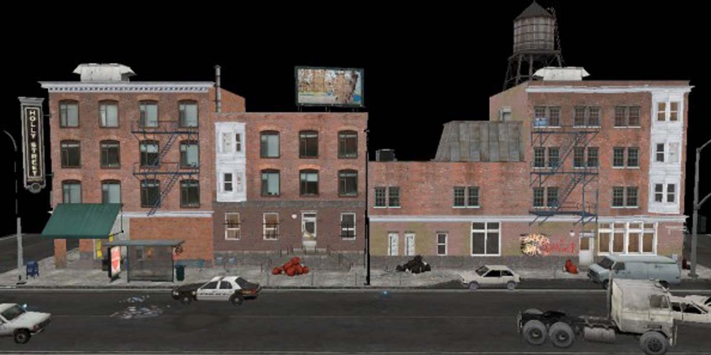
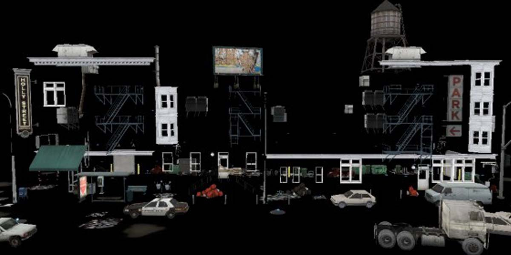
Textures and materials
Textures disproportionate to the on-screen size — 4K on an object the size of a fingernail; especially painful for UI and decals.
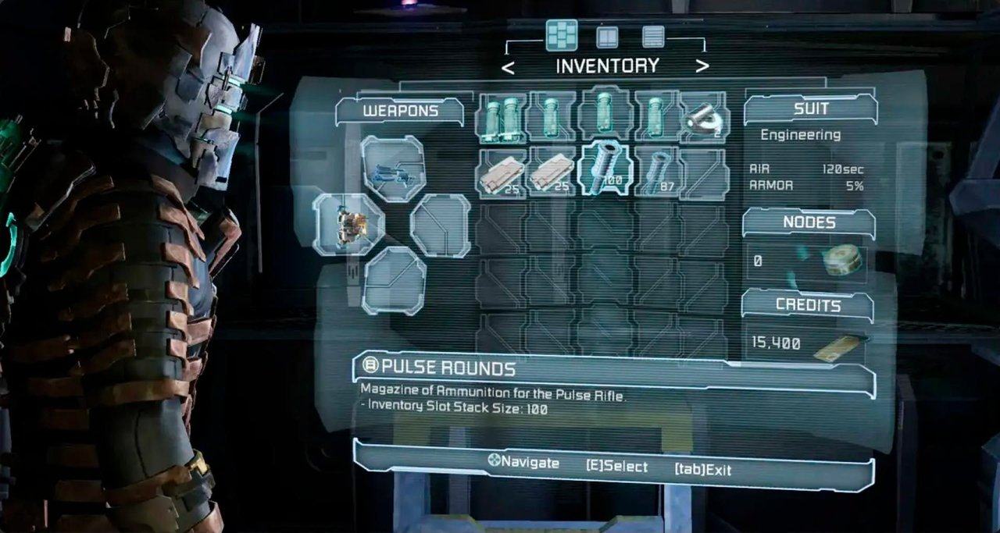
Missing or wrong mipmaps — aliasing + cache thrash on the GPU.
Materials with a heavy shader — PBR "by default" everywhere; dynamic branching in pixel shaders.
Materials hell — dozens of unique materials that are visually indistinguishable.
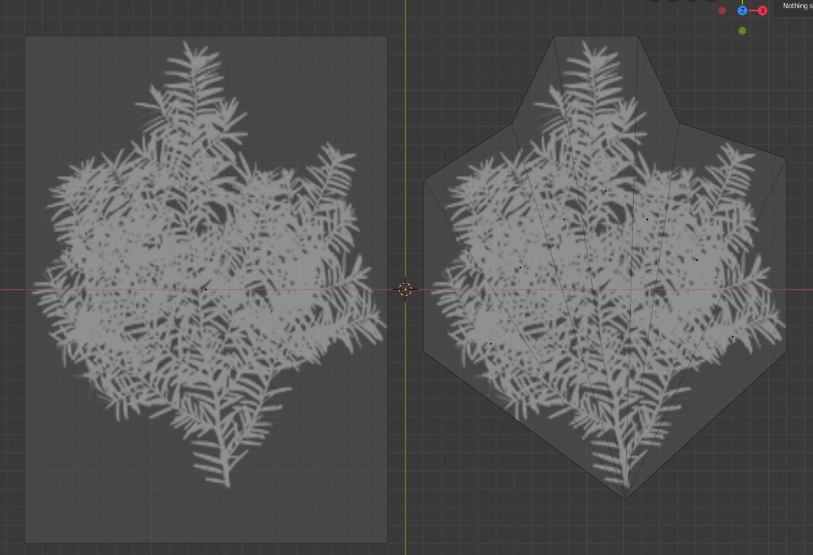
Animations — too high a skeleton sampling rate; skeletons with an excessive number of bones; animations updating off-camera; blending without limits.
Render
- Unique particles for fog, UI, post-effects (if not batched)
- Transparency on top of transparency
- Effects that don't turn off by distance / quality
- Shadow maps that are too large
- Too many shadow-casting light sources
- Dynamic shadows everywhere
Visibility and culling
- Missing or incorrect frustum / occlusion culling
- Streaming areas with bad boundaries
- Scenes with the idea "everything is always loaded"
- Long corridors with transparency
- Open spaces without natural occluders
- A camera looking at "everything at once"
It's important that everyone involved in doing the project good — including not only programmers and artists but also game designers, and indeed everyone else on the team — understands the impact of their decisions on perf (fps, roughly) and tracks that impact through profiling and testing. Because if we learn about a performance problem too late, when the game is already done or almost done, fixing it will be very hard and expensive, and sometimes outright impossible, because it may require big rework, and not only of content.
There's an "empirical" relationship between the speed of fixing content bugs and their age, and it equals 1.6-2x, i.e. if a bug was found a day ago, then optimistically it'll be fixed today-tomorrow, a week ago — correspondingly next week. There's a catch, though — you can get the "last-week effect": "I told you I'd fix it next week. Why have you been reminding me about it for the second month already?" And if it's a month or more, then the relationship becomes very nonlinear, and returning to the teeth bug in CS2 — it was found, by rumor, 2 months before the game's release, then the game was postponed another three months, and it was fixed three months after its launch.
Accordingly, so that everything is fine and we don't get unpleasant surprises before release, performance testing is brought as close as possible to the players' real hardware, including potato configurations with minimal system requirements, on which the game should at least somehow run at 30 fps.
For artists, there should also be specialized tools that let them themselves look at how performance drops or doesn't drop after their changes — some top-level counters like the number of polygons on screen or the number of drawcalls, so that texture sizes can be checked and you can assess whether they fit the memory budget, and so on, various visual parameters like the number of light sources or shader complexity.
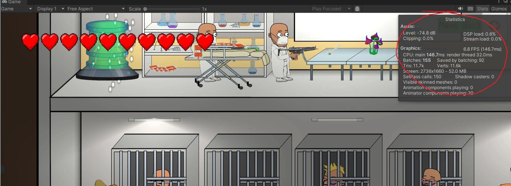
Drawcalls
In the Russian-speaking gamedev community the term "drawcalls" is usually pronounced as "dró-kolly" or "dró-koly" with stress on the first syllable. Less common variants: "drav-kolly" — sometimes encountered, but more rarely, and "vyzovy otrisovki" (literally "draw calls") — a literal translation, rare in speech and more in documentation, or the English spelling as the commonly accepted standard. And leave all those "drow" and "draw" summons to the elves, morlocks and other critters.
Over time studios got a separate testing discipline — performance QA, those are the people who understand the engine code at the level of a good mid and professionally test programmers' changes on various hardware configurations, with various graphics quality settings, and accordingly they then decide whether a new feature fits the established performance budgets, and whether it can be dragged further into the main development branch at all without harming the target platforms. PerfQA is often joined by engine programmers who don't really enjoy working on the engine, but for whom pure QA isn't interesting either.
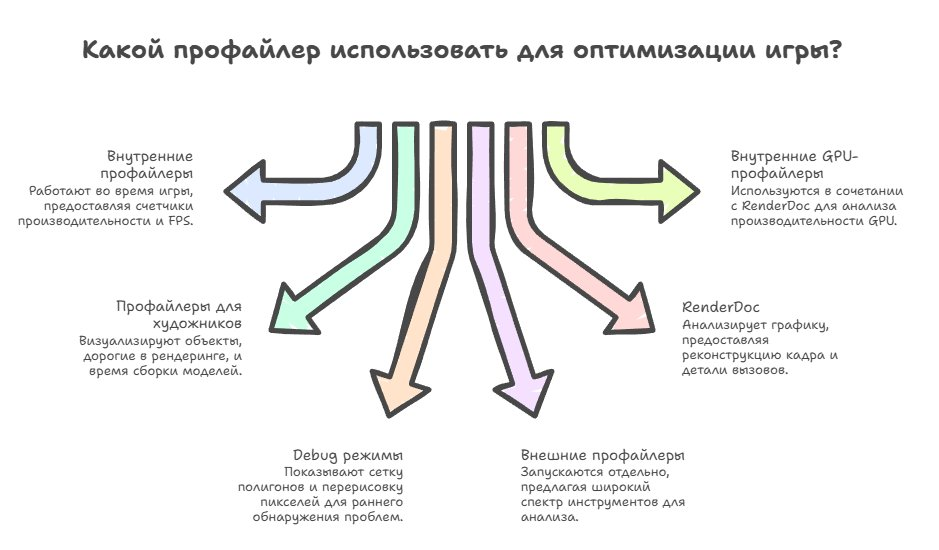
As for the kinds of profilers — there's a certain number of various tools, and they can be logically divided into two big categories: internal profilers built directly into the game engine and working right during gameplay, including various performance counters, the current FPS and the time spent on various systems, and ones more specialized for artists, which show visually which objects are the most expensive in rendering, the build time of models, the blending of parts and so on.
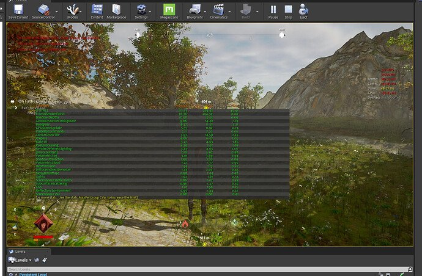
In general you can probably also consider a "profiler" the various debug rendering modes, like wireframe mode that shows the polygon mesh, or overdraw visualization that shows how many times each pixel is redrawn. These are all things that let you detect a problem at an early stage, identify its nature and fix it before it gets into the repo.
There are external profilers that are launched separately from the game and attach to it to collect data, and they're well known to everyone (Tracy, Pix, Razor, VTune, Optick, Dr, RGP, IGPA, ASP, Systrace, Perfetto). Even the one built into Visual Studio can be used for profiling, to look at how and what executed, how much time each function took, how much memory was allocated and so on.
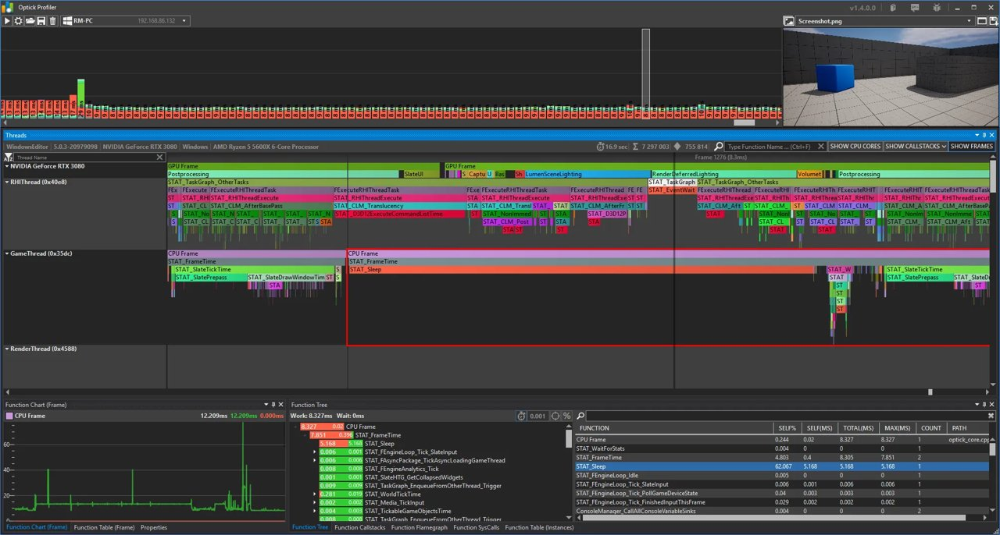
For the GPU, RenderDoc is often mentioned, and it really is a powerful combine for graphics analysis, with which you can look at what was happening on the video card frame to frame, which shaders executed, which textures were used, and dig further into render optimization. RenderDoc is essentially the starting point for any serious conversation about GPU profiling, because it gives not abstract numbers but a full reconstruction of the frame, with the ability to look at individual calls and how much time they took.
But RenderDoc is first of all a tool for analysis and debugging, not a classic profiler in the sense of timings and statistics, and it answers the questions "what exactly are we drawing" and "in what order" perfectly, but almost doesn't answer the question "how much does this really cost in time on the hardware." In real work RenderDoc is almost always used in tandem with internal GPU profilers or vendor tools like Nsight, which let you look at the frame from the standpoint of execution on the GPU: how much time each call took, where the graphics waits for the CPU or vice versa, whether we're bound by memory — and in fact only this pair makes it possible to combine the CPU and GPU timelines and see where exactly the CPU isn't keeping up feeding the video card, and where the GPU itself already becomes the bottleneck.
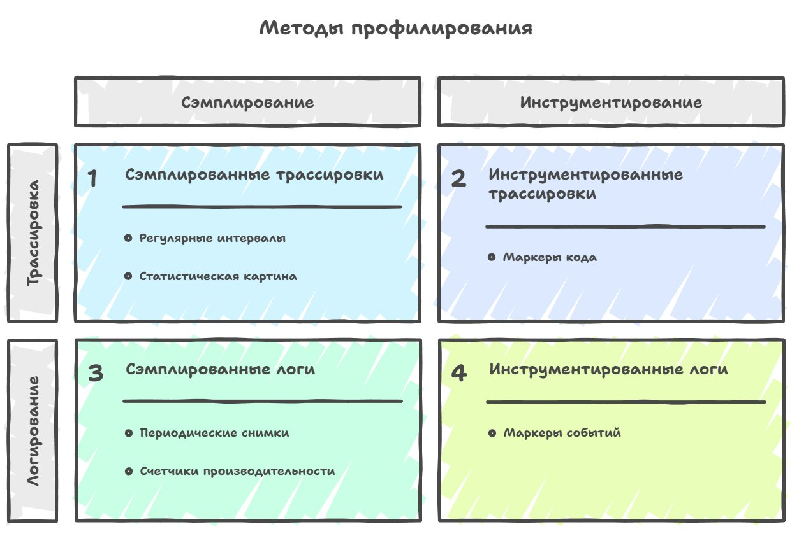
Of the profiling methods most widely used in gamedev, four main approaches can be singled out: sampling, instrumentation, tracing and logging.
The first is sample-based profiling (sampling), a method where data about the work of an application or game is collected at regular intervals — for example, every millisecond the profiler stops the program and looks at which function is currently executing, records the stack trace, and after accumulating enough such samples builds a statistical picture of where the program spent the most time. Accordingly, the accuracy of the data we collect — roughly the level of detail of the picture we end up with — depends on how we chose these intervals and how often we make the stop.
Function execution times:
• physics_update: 5 ms
• render_scene: 10 ms
• process_ai: 3 ms
• audio_update: 2 ms
Total samples collected: 52:
audio_update: 5 samples (9.6%)
game_loop: 2 samples (3.8%)
physics_update: 13 samples (25.0%)
process_ai: 8 samples (15.4%)
render_scene: 24 samples (46.2%)This is one of its main downsides, because sampling profilers often "lie" — i.e. they give low accuracy for fast functions, and if a function executes for less than the sampling interval, they throw out that sample entirely, even though it's actually called thousands of times per frame and in total takes up significant time.
The fast-functions problem:
═══════════════════
Time: 0 100 200 300 400 500 600 700 800 ns
│ │ │ │ │ │ │ │ │
↓ ↓ ↓ ↓ ↓ ↓ ↓ ↓ ↓
[────────── process_particles ──────────][other_work]
└─────────── 500 ns ───────────┘└─ 300ns ─┘
Inside [f][f][f][f][f]...[f][f][f] (5000 calls)
the proc:↑ ↑ ↑ ↑ ↑ ↑ ↑ ↑
0.1ms each
fast_function (0.1 ms each):
│▪│▪│▪│▪│▪│▪│▪│▪│▪│▪│▪│▪│▪│▪│▪│▪│▪│▪│▪│▪│ ... (5000 of them)
Sampling interval (2 ms):
▼ ▼ ▼ ▼
│ │ │ │
S₁ S₂ S₃ S₄
Probability of landing IN one function:
0.1 ms / 2 ms = 5%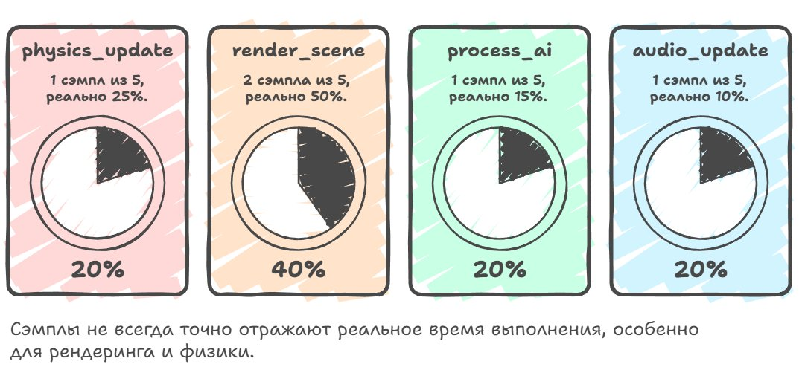
It can be used as an additional source of information, but often, for an accurate performance comparison between different versions of the code, this method isn't suitable, because its results don't always repeat and vary greatly from run to run due to the random nature of the sampling.
TIMELINE:
Time (ms): 0 2 4 6 8 10 12 14 16 18 20
│ │ │ │ │ │ │ │ │ │ │
↓ ↓ ↓ ↓ ↓ ↓ ↓ ↓ ↓ ↓ ↓
Real [physics][ render_scene ][AI ][ audio ]
execution: └─5ms──┘ └───────10ms───────┘└─3─┘└──2ms─┘
MOMENTS: ▼ ▼ ▼ ▼ ▼
of sampling: S₁ S₂ S₃ S₄ S₅
(every 2 ms)
TICKS: [physics] [render] [render] [AI] [audio]
↑ ↑ ↑ ↑ ↑
"Now in "Now in "Now in "Now in "Now in
physics" render" render" AI" audio"
Total samples: 5
physics_update: 1 sample (20%) ← Really was 25%
render_scene: 2 samples (40%) ← Really was 50%
process_ai: 1 sample (20%) ← Really was 15%
audio_update: 1 sample (20%) ← Really was 10%In general, sampling works poorly with multithreaded systems, because when you have eight threads running in parallel on eight cores, it's very hard to understand the cause-and-effect relationships between events in different threads and to see synchronization problems, such as when one thread waits for the release of a mutex held by another thread. And sampling is used because it's cheap and you don't have to change the program's code — all the needed information is obtained through the pdb and parsed automatically by the profiler.
The second method that's actively used is instrumental profiling, where you have to manually place special markers or macros in the code that record the exact start and end time of execution of each important function or block of code.
#define PROFILE_SCOPE(name) \
ProfileScope profile_scope_##__LINE__(name)
#define PROFILE_FUNCTION() \
PROFILE_SCOPE(__FUNCTION__)
// RAII class for automatic begin/end
class ProfileScope {
private:
const char* name;
public:
ProfileScope(const char* n) : name(n) {
g_profiler.begin_event(name);
}
~ProfileScope() {
g_profiler.end_event(name);
}
};
void physics_update() {
PROFILE_FUNCTION(); // ← Profiler marker, automatically records time
std::this_thread::sleep_for(std::chrono::milliseconds(5));
}
void render_scene() {
PROFILE_FUNCTION(); // ← Marker
std::this_thread::sleep_for(std::chrono::milliseconds(10));
{
PROFILE_SCOPE("RenderScene::DrawCalls"); // ← Nested marker
std::this_thread::sleep_for(std::chrono::milliseconds(3));
}
}Here the main plus is that this method works beautifully with multithreaded systems, and you can see when each thread did what, and it's easy to detect problems like one thread idling while waiting for another thread or two threads constantly fighting over the same resource.
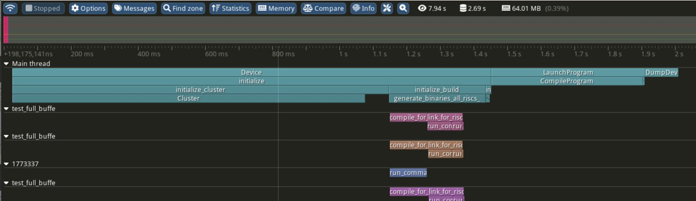
Instrumentation is well suited not only for hardcode but also for the scripting languages that engines use to describe game logic, and even if you have some custom scripting language of your own, you can calmly place markers in the interpreter or compiler and look at what happened at the script level, which script functions took how much time.
But you need to understand the "price" we pay for the accuracy of such profiling, and the first price is the runtime overhead. If the profiler adds ten lines of code per profiled line, the game will run at least 10 times slower. The real numbers of course show that the drop isn't that critical, and on average we lose from 10% to 20% FPS when profiling this way. And we can also minimize this overhead through selective instrumentation, not putting markers on every function in the project but only on the systems that really matter.
The second price is the maintenance cost, because your profiler is code too, it can also have its own infrastructure and change as the codebase grows, and often the second price becomes much higher than the first once refactoring begins in the project.
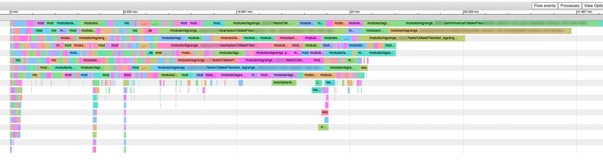
There's a subtype of instrumentation called tracing, where a stream of events over time is collected: the start/end of tasks, locks, waits, messages between threads, task queues — but unlike the classic collection of frame-profile statistics, for example, which aggregates data, tracing on the contrary lays the data out over time, preserving the chronology. The chronology of events is often the key moment for understanding the behavior of different systems, task graphs and asynchronous pipelines, and that's exactly why modern tools like Tracy, PIX, ETW traces are more like an oscilloscope than a table with execution percentages per function.
AGGREGATED PROFILING:
┌────────────────────────────────────────┐
│ Function │ Time │ % of frame │
├──────────────────┼────────┼────────────┤
│ PhysicsUpdate() │ 4.2ms │ 25% │
│ RenderScene() │ 8.1ms │ 48% │
│ UpdateAI() │ 2.3ms │ 14% │
│ Other │ 2.1ms │ 13% │
└──────────────────┴────────┴────────────┘
TRACING (timeline):
Thread 1: ████PhysicsUpdate████░░░░░░RenderScene██████████░░
Thread 2: ░░░░░UpdateAI░░░█████LoadTexture█████░░░░░░░░░░░░
Thread 3: ░░░░░░░░░░░░░░░░░░░░░ProcessAudio████░░░░░░░░░░░░
|----|----|----|----|----|----|----|----|----|----|
0ms 2ms 4ms 6ms 8ms 10ms 12ms 14ms 16ms 18ms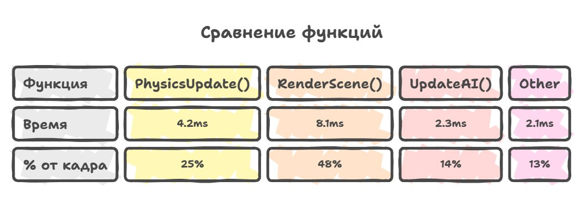
If you look in the opposite direction from tracing, there you'll find event-based profiling (logging), which is a relative of tracing but differs in a fundamentally different approach to what exactly we measure and how we interpret the results.
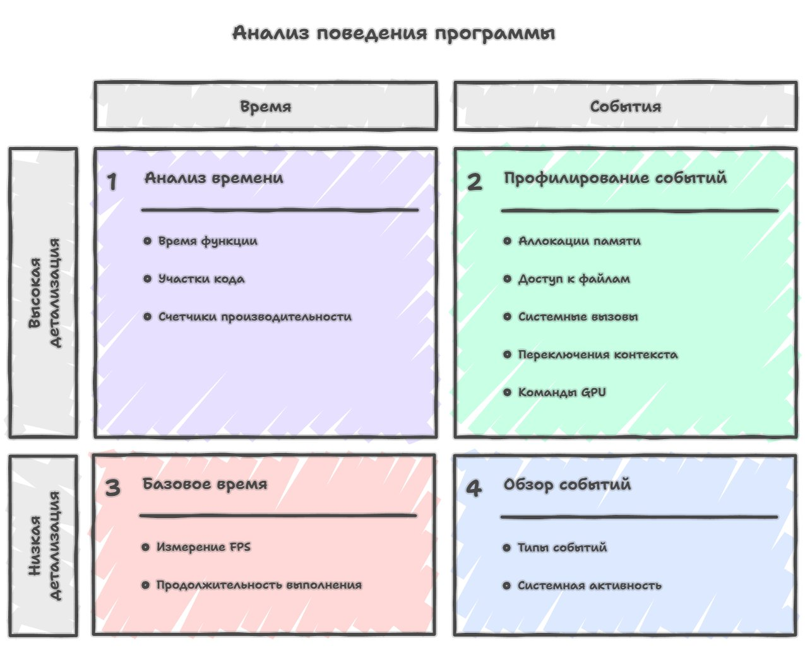
If classic profiling is focused on measuring continuous time intervals and answers the question "how much time did we spend in this function or on this piece of code," then event-based profiling instead records concrete discrete events happening in the system, such as memory allocations with the size and place in the code indicated, file-system accesses with information about which file is opened and how many bytes are read, system calls with their arguments and results, waits on synchronization primitives like mutexes or semaphores, context switches between threads with the reason for switching indicated, sending commands to the GPU with detailed information about which resources are used and which shaders are launched, and a multitude of other events that make up the real life of a running program.
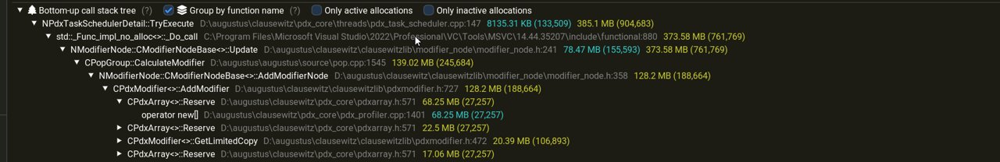
Historically the event-based approach developed in parallel with the world of systems programming and operating systems, where it was required to understand what exactly happens at the level of the OS kernel, which processes and threads compete for resources, or why context switches happen and similar low-level details, and it allowed you to see OS calls with their arguments and result without the need for recompilation or restart.
Gamedev, as usual, developed its own specialized profiling tools, which initially focused on measuring the execution time of functions and pieces of code but gradually evolved toward more detailed analysis of events, especially with the appearance of complex multithreaded architectures and the need to understand the interaction of CPU and GPU. General tools like Intel VTune, which started as sampling profilers, eventually turned into powerful performance-analysis combines with support for tracing hardware processor events, the work of the graphics pipeline, graphics profiling. In parallel, specialized game profilers like Telemetry or Optick, which started with tracing, added event-based components and sampling as a complement to the main functionality.
The distinction of the event-based approach is that it lets you answer not so much the question "where do we spend time" as the more fundamental question "what is even happening in the system, when and why," which opens up a somewhat different level of understanding of the program's behavior. You see in an ordinary profiler that some function takes a lot of time, but you don't understand why exactly it became slow in this particular frame or under these particular conditions, because the traditional profiler shows you only the execution time of this function, while the detailed picture of which system events exactly were happening at that moment remains hidden.
TRADITIONAL PROFILING:
═══════════════════════════════════════════════════════════════
Frame #1042: 116.8ms (SLOW)
Function Call Tree:
├─ GameLoop() 16.8ms 100%
│ ├─ UpdatePhysics() 4.2ms 25%
│ ├─ UpdateAI() 110.3ms 61% SLOW!
│ │ ├─ PathFinding() 90.8ms 58% WHY SO SLOW?
│ │ └─ BehaviorTrees() 0.5ms 3%
│ └─ Render() 2.3ms 14%And event-based profiling solves this problem by giving a detailed chronology of events, where you can see that at that exact moment three memory allocations happened totaling fifty megabytes, or a page-in of memory from disk occurred because the OS decided it didn't have enough free RAM, or a context switch happened to another thread that was waiting on a mutex.
EVENT-BASED PROFILING (simplified):
═══════════════════════════════════════════════════════════════
Frame #1042: 116.8ms (SLOW)
Timeline with events:
0ms PathFinding() START
│
20.2ms ├─ EVENT: Memory Alloc (15 MB, NavMesh data)
│ ↓ Triggered by: LoadNavigationData()
│ Location: pathfinding.cpp:142
│
20.8ms ├─ EVENT: Memory Alloc (20 MB, A* open list)
│ ↓ Heap fragmentation detected!
│ Location: pathfinding.cpp:187
│
30.1ms ├─ EVENT: Memory Alloc (15 MB, path cache)
│ ↓ Total allocated: 50 MB
│
3.5ms ├─ EVENT: Page Fault (major)
│ ↓ OS swapping from disk!
│ Duration: 4.2ms
│ Reason: Working set exceeded
│ Pages faulted: 12,800
│
7.7ms ├─ EVENT: Context Switch
│ ↓ From: WorkerThread_2
│ ↓ To: System
│ ↓ Reason: Page fault I/O completion
│ Duration: 1.8ms
│
9.5ms ├─ EVENT: Mutex Wait
│ ↓ NavMeshMutex held by RenderThread
│ Duration: 0.3ms
│
9.8ms PathFinding() END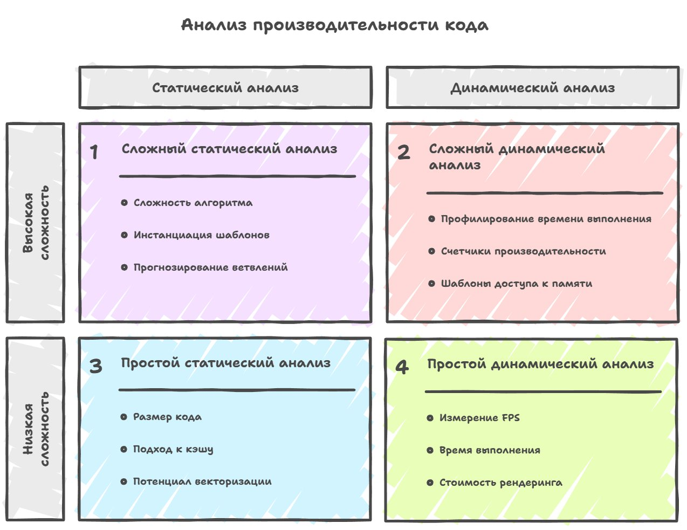
Moving on to the next approach, you need to shift the perception of profiling in your head quite radically, because static profiling and analysis isn't a measurement of the program's execution time at all in the usual sense of the term.
It rather represents an attempt to assess potential performance problems in advance by analyzing the code itself and its structure at compile time, before the code actually starts executing (johnnysswlab.com).
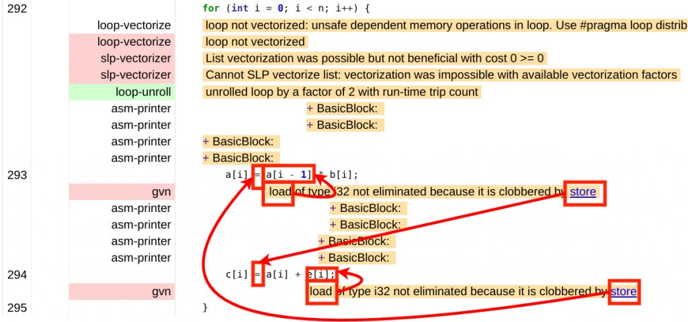
This can include analysis of the theoretical complexity of algorithms with an assessment of their behavior in terms of big O, counting the number of template instantiations in the code, measuring the actual size of the compiled code and predicting how well it fits into the instruction cache. Or static analysis of memory access patterns to predict possible cache misses based on the known characteristics of the target processor, checking the possibility of automatic loop vectorization by the compiler and analyzing why some loops aren't vectorized, assessing the complexity of branches and predicting how well the predictor will handle predicting these jumps, and a multitude of other aspects that can be analyzed statically, or simply finding implicit errors.
Historically the idea of static performance analysis developed in parallel with the development of the theory of algorithms and compilers and has very deep roots reaching into the earliest days of compilers, which led us to the appearance of optimizing compilers and added a new dimension to code analysis. Compilers began not only to translate code but to actively analyze it to apply optimizations, and in fact this side data from compilers on code analysis became a source of additional information about potential performance problems that could be extracted and presented to the developer. Against this background external static analyzers began to appear, one of the most well-known of which became Cppcheck and PVS.
Cppcheck initially wasn't a tool for optimization or code-generation analysis but focused on finding logical errors, undefined behavior and hidden defects in C/C++ code. However, as it developed it began to use ever-deeper analysis of program structure, including template code, which inevitably brought it into an area overlapping with the problems of scalability and code complexity.
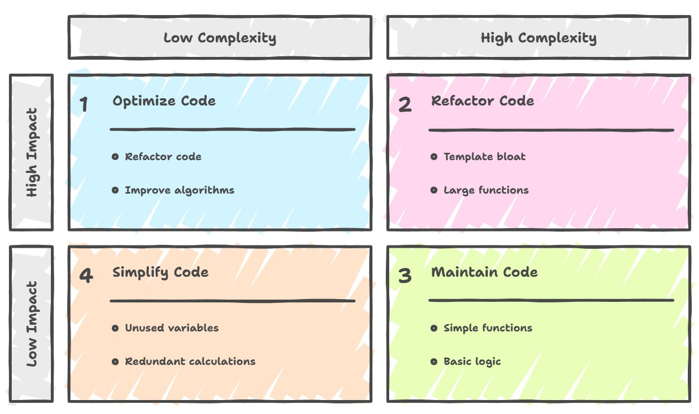
In particular, template analysis exposed a whole class of problems related to their compilation and use: from redundant instantiations to non-obvious code bloat, which formally aren't errors but directly affect build time, binary size and indirectly performance. These observations weren't unique to Cppcheck, but it was precisely such tools that made such effects visible to developers, showing that performance problems can originate long before the program-execution stage, at the level of the source-code structure and its interaction with the compilation model. I'll show a few template problems that can be detected by simple source-code analysis.
The first is multiple instantiations, when each translation unit is compiled independently, and if two different cpp files use the same template with the same parameters, the compiler creates a copy of the instantiated code in each object file separately, and only at the linking stage will these duplicates be found and removed — but this increases compile time and the size of intermediate object files.
The second is near-duplicate instantiations, when the code of different instantiations is practically identical, but the compiler is forced to store them as separate copies due to formal differences in the template parameters, and the classic example is vector<int*> and vector<double*>, where the pointers have the same size and the same representation in memory on any platform, so the generated machine code for both versions will be absolutely identical, but the compiler still creates and stores two separate copies.
The third is a source of excessive inlining in headers, when even small methods of template classes, which could have been moved into separate cpp files in the case of ordinary classes, end up in header files, and the compiler aggressively inlines them in all places of use, which multiplies the code size.
But here you have to understand that static profiling doesn't replace ordinary profiling by various methods and shouldn't be regarded as a full-fledged alternative at all, because the real behavior of a program depends on a very large number of dynamic factors that are impossible to predict.
But static analysis works excellently as an early filter and a learning tool, to identify and eliminate obvious problems at the development stage, before the code gets into the binary. It also helps explain "why" some places are potentially expensive in terms of performance even before launching the profiler and measuring the actual execution time.
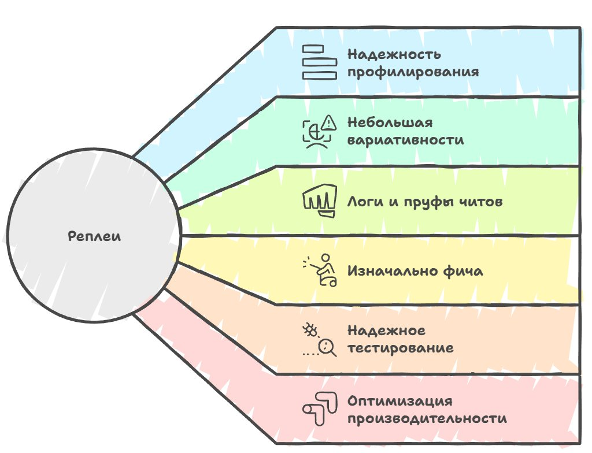
And the last separate area of profiling is replays, which represent not so much a separate type of profiling as the possibility of making any profiling much more reliable and useful.
The essence of the approach is that game engines use the technique of recording the player's input or the full state of the game world at certain moments in time, with subsequent playback of this recording. This lets you run an absolutely identical sequence of events again and again, gaining the ability to compare different versions of the code or different optimizations under identical conditions and remove the variability of results due to the randomness of execution on the hardware. There's one point why replay is so important for measuring perf — real gameplay is so variable and dependent on the player's actions that getting repeatable measurements is practically impossible; even if a super-trained QA does everything perfectly, there will still be micro-deviations in the actions that lead to dissimilar behavior inside the game.
Historically, replay systems developed in the game industry for independent reasons, and only over time did their value for profiling and optimization become obvious and consciously applied.
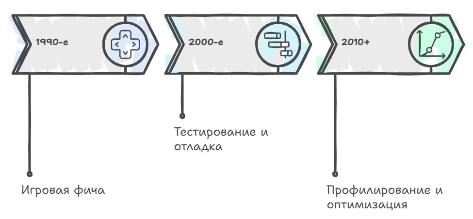
Initially replay systems appeared as a game feature, so that players could rewatch and analyze their matches, and the classic example here is old RTS games like StarCraft and Warcraft, which saved not a video recording of the game but the sequence of players' commands, allowing the whole match to be reproduced exactly using a minimal amount of data.
In parallel with this, replay systems were used in testing and debugging as a way to reproduce bugs that are hard to catch with ordinary debugging, especially those related to rare cases in multithreaded code or to a certain sequence of player actions. And only relatively recently, perhaps starting from the late 2000s when performance optimization became important enough for AAA games running on consoles with limited resources, developers began systematically using replays for profiling and comparing the performance of different versions of code.
The key idea of deterministic profiling is ensuring the reproducibility of actions, because without reproducibility any performance comparisons become, as they say, "pitchforks on water" and can be misleading. Imagine that you optimized some system in the engine, launched the game and measured that performance improved by fifteen percent, but you can't be sure this is a real improvement from the introduced optimization, because this time the player moved along a slightly different route, different areas of the world were loaded, random enemies spawned in different places, and a thousand other factors created a slightly different load on the system.
And with a replay you can run a completely identical scenario before and after the optimization, and each frame will process exactly the same data in the same order, and any difference in performance will be guaranteed to be explained only by changes in the code, not by gameplay variability.
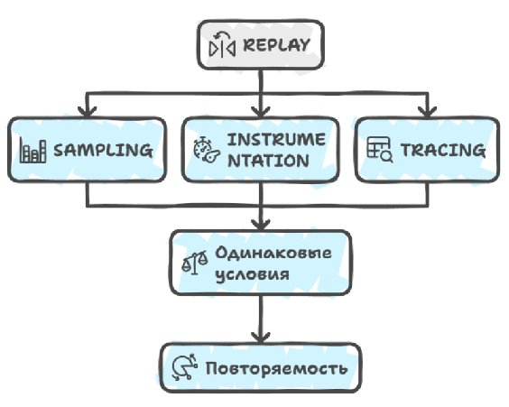
The profiling itself when using a replay can be absolutely anything, be it sampling that collects statistics on function execution times, or instrumentation that measures the exact time of entering and leaving functions, or tracing that records all significant events in the system, but the key factor here becomes precisely the reproducibility of conditions, which allows you to make reliable comparisons and conclusions.
The practical implementation of replays in modern game engines is usually divided into several levels of detail, where at the most basic level you can record only the player's input, like key presses and mouse movement with precise timestamps, and play them back in a deterministic simulator, guaranteeing that with the same input you always get the same world state. At a more advanced level you can record the full state of the game world at key moments in time, creating snapshots from which playback can begin, which gives much greater flexibility and lets you quickly fast-forward to moments of interest without replaying the whole session from the start. And at the most detailed level engines record literally everything, including the results of all file-system accesses, network packets, random-number generation and even system calls, creating a fully isolated and deterministic execution environment that guarantees the absolute reproducibility of any program behavior.
A tracing profiler
If you look at the design of a tracing profiler used in modern game engines, there are many requirements for it, but most of them are tied to the end user: programmers, artists, performance testers, designers of NPCs and sound all need their own specific set of data and their own way of presenting it — but if we go down to the level of the basic architecture, it'll usually be implemented through a system of C++ preprocessor macros. This may seem an old-fashioned approach, but in practice it gives the ability, with compile flags, to turn whole aspects of profiling on or off depending on the build configuration.
┌──────────────────────────────────────────────────────────┐
│ #define PROFILING_ENABLED 1 │
│ #define PROFILING_LEVEL_FULL │
│ │
│ PROFILE_SCOPE("Physics") ──> [records all data] │
└──────────────────────────────────────────────────────────┘
┌──────────────────────────────────────────────────────────┐
│ #define PROFILING_ENABLED 1 │
│ #define PROFILING_LEVEL_BASIC │
│ │
│ PROFILE_SCOPE("Physics") ──> [basic metrics] │
└──────────────────────────────────────────────────────────┘
┌──────────────────────────────────────────────────────────┐
│ #define PROFILING_ENABLED 0 │
│ │
│ PROFILE_SCOPE("Physics") ──> [fully removed] │
│ [no code at all] │
│ Overhead: (none) │
└──────────────────────────────────────────────────────────┘
PREPROCESSOR MACROS OTHER LANGUAGE MECHANISMS
═════════════════════ ══════════════════════
if (PROFILING_ENABLED) { if (config.profiling) {
[profiling code] [profiling code]
} }
▼ ▼
┌───────────────────┐ ┌───────────────────┐
│ Release: │ │ Release: │
│ [empty] │ │ if (false) { │
│ │ │ [dead code] │
│ │ │ } │
│ Overhead: │ │ Overhead: │
│ 0 bytes │ │ + the if check │
│ 0 instructions │ │ + dead code │
│ │ │ + binary size │
└───────────────────┘ └───────────────────┘In the release version of the game you can fully disable profiling altogether with a single directive, and unfortunately no other language mechanism lets you do anything similar, and there will be overhead everywhere, even if minimal.
Next comes the profilers' data layer, because there are various data processors that know how to handle the collected data and where to output it, and these can be completely different systems.
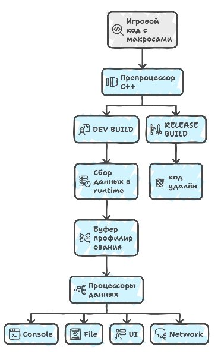
You can output to the console for artists some minimal set of data like the current FPS, or the number of drawcalls and the amount of memory used for programmers, so they can see the impact of their changes in real time.
A zero-allocation architecture
If you peek deeper inside the profiler's implementation, a very important point turns up here: the profiler can't make dynamic allocations during its work (not make them at all — this is called an alloc-free architecture), that is, the entire needed memory pool is allocated in advance at initialization, and all these objects are created ahead of time and just wait to be used. It can of course make them, but then all the results start to drift, because malloc itself drifts quite a lot during allocation.
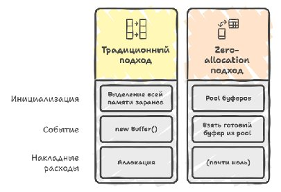
If you try to get rid of all (all, Carl) allocations, at some point you'll arrive at the concept of buffers (a buffer provider), when you have a set of fixed-size buffers that are pre-allocated and stacked in queues, and accordingly various writers for these buffers: for CPU, GPU, IO, physics, AI events and so on — their job is to take free buffers from this queue and write data about the occurring events into them as they happen.
Next, as soon as it's time to collect data from these buffers, they're marked as ready for processing and moved to another queue, so that the data processors can then request and process them, and each writer is given its own specialized parser that knows how to extract the stream of events from the buffer, already at the level of user data interpreters, to do something with it, be it display on a timeline or aggregation of statistics.
Now, to steer these buffers and parsers, you need to make one more system — a data dispatcher that runs over all registered data processors that want to process events and sequentially calls their processing methods.
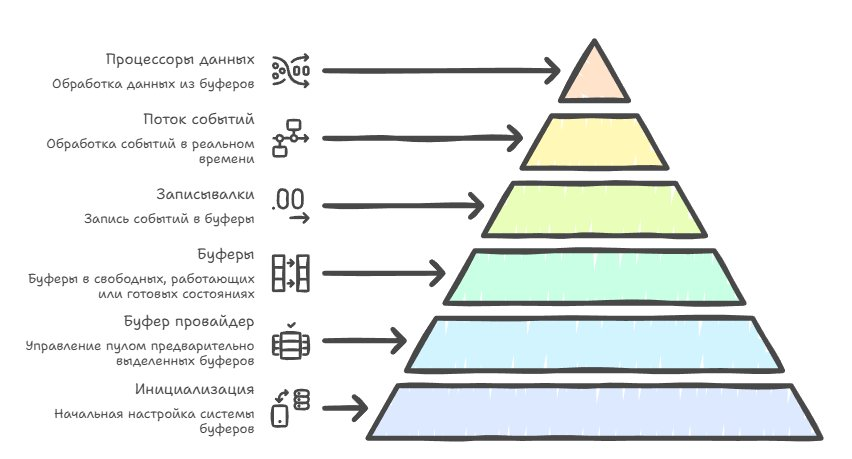
As soon as all the data is processed it returns the buffers back to the pool for reuse, which in principle lets you not make any allocations, not worry about leaks and work fast and efficiently, if you want to collect more than 100k events per frame at an acceptable fps.
String handle
And when you get close to collecting around 100k events per frame, you run into a problem, because strings stop working, both static and dynamic. If the static ones still wiggle somehow, the dynamic ones kill perf dead, so the profiler very actively uses string handles for the names of functions, files, events and everything else.
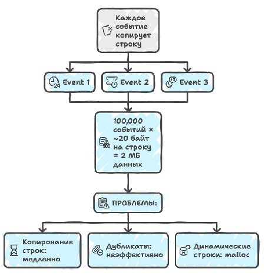
We also don't want to write strings directly into the event stream, because they can be very long (anything longer than 80 characters is slow and expensive to write), they can be repeated many times in different events, and they have variable length, which adds problems for the binary-data parser too. But since most strings come to us from the binary itself, we can directly store a pointer to that string as a 64-bit number, and this will work great, because the string is guaranteed to exist for the whole life of the program — i.e. yes, we violate several principles of writing a good architecture here at once, but if you need to collect more than 100k events with descriptions, you'll have to resort to some hacks.
BINARY (.exe/.dll) EVENTS IN THE BUFFER
════════════════════ ════════════════
┌─────────────────────┐ ┌──────────────────┐
│ .rodata section │ │ Event 1: │
│ │ │ timestamp: 123 │
│ 0x00401000: │<───────────────│ name_ptr: │
│ "Physics::Update" │ pointer │ 0x00401000 │
│ │ │ duration: 42 │
│ 0x00401010: │ └──────────────────┘
│ "Render::DrawCall" │<───┐ ┌──────────────────┐
│ │ │ │ Event 2: │
│ 0x00401020: │ │ │ timestamp: 156 │
│ "AI::Think" │ │ pointer │ name_ptr: │
│ │ └───────────│ 0x00401000 │
└─────────────────────┘ │ duration: 38 │
▲ └──────────────────┘
│ ┌──────────────────┐
Strings exist for │ Event 3: │
the whole program lifetime │ timestamp: 189 │
Guaranteed valid │ name_ptr: │
│ 0x00401010 │
│ duration: 12 │
└──────────────────┘This doesn't always work, because sometimes dynamic strings are needed after all, created during program execution — for example the names of game objects or formatted messages. For this, handles are used, which are put into a separate buffer where all the unique dynamic strings are stored, and the address is again taken from there. Most strings are still static, so this works perfectly fast and we save time on copying strings.
RUNTIME CREATION: STRING HANDLE BUFFER
(a separate buffer)
┌──────────────────┐ ═══════════════════
│ Game code: │
│ │ ┌─────────────────────┐
│ sprintf(buf, │ │ 0x10000000: │
│ "Enemy_%d", id) │────────────>│ "Enemy_42" │
│ │ add if │ │
└──────────────────┘ it's new │ 0x10000010: │
│ "Player_John" │
┌──────────────────┐ │ │
│ Gameplay code: │ │ 0x10000020: │
│ │────────┐ │ "Level_3_Boss" │
│ entity.getName() │ │ │ │
│ │ │ │ 0x10000030: │
└──────────────────┘ │ │ "Enemy_42" │<─┐
│ └─────────────────────┘ │
│ ▲ │
│ ┌───────┴────────┐ │
└───>│ Hash Table: │ │
│ "Enemy_42" │───────┘
│ → 0x10000000 │
│ Deduplication │
└────────────────┘And in principle this is enough to write a profiler at the level of Tracy or Pix and start using it — I'm talking about the CPU part right now, because with the GPU everything is both harder and easier at the same time, but about that some other time.
So what's the bottom line...
In the end we've arrived at the fact that modern profiling is a multi-level system, and every detail of the architecture was written in blood, sweat and low fps. From the choice between sampling, instrumentation and tracing to the implementation of a zero-allocation architecture with pools and strings-that-aren't-strings — all these decisions are aimed at getting the most accurate picture of performance possible without affecting the performance itself, which is very, very hard to do. The path from simple FPS measurement in the first engines to combines at the level of Tracy and PIX, capable of processing almost anything you want, shows how these systems evolved from game features and debugging tools into standalone solutions for optimization. And all this grew not just into debugging tools but a separate infrastructure, without which game development would lose both in development speed and in deadlines.
← All articles